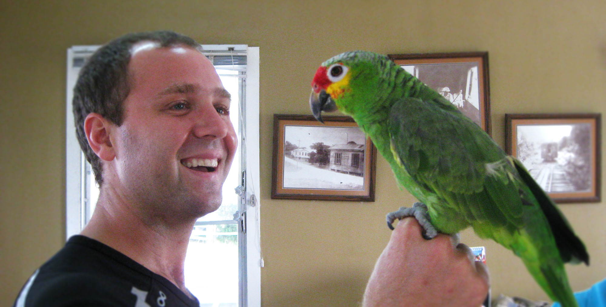

Rescuing and Rehoming Domestic Birds since 1993!

Airborne helps provide new homes to domestic birds that have been lost, surrendered by their owners, or inadequately cared for. We provide foster homes, veterinary care, and adoptions for needy birds. For 25 years, we have rehomed thousands of birds and helped countless others through education and referral. Our headquarters are in Champaign, Illinois, but we work with hundreds of avian rescues across the United States. We have a wide network of expert help. Stop in today and learn about how you can give a second chance to a bird in need!
Our Partnership with Sun Planet!
Be a Birdy Billboard!


We are proud to announce our partnership with Sun Planet! Show off your love of birds with T-shirts, tote bags, stickers, and more. Merchandise is made with renewable materials and solar power right here in the United States, so you can feel good about what you're buying. All proceeds go towards veterinary care, food, toys, and other necessities for birds in need.
Visit the shop!